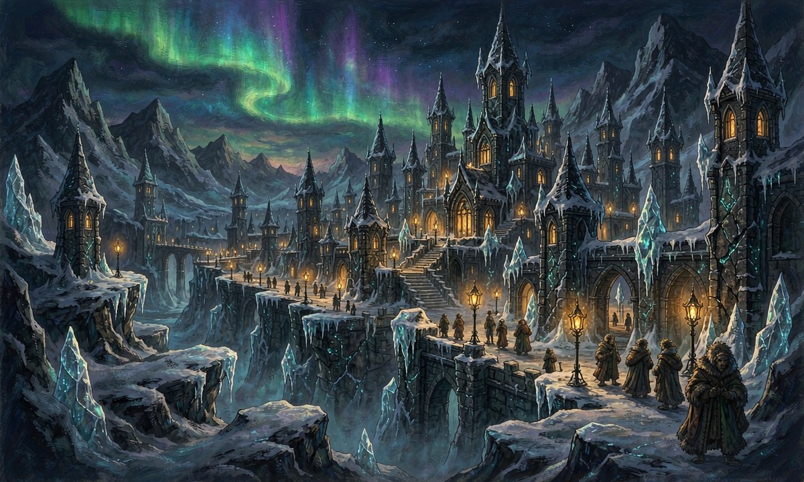
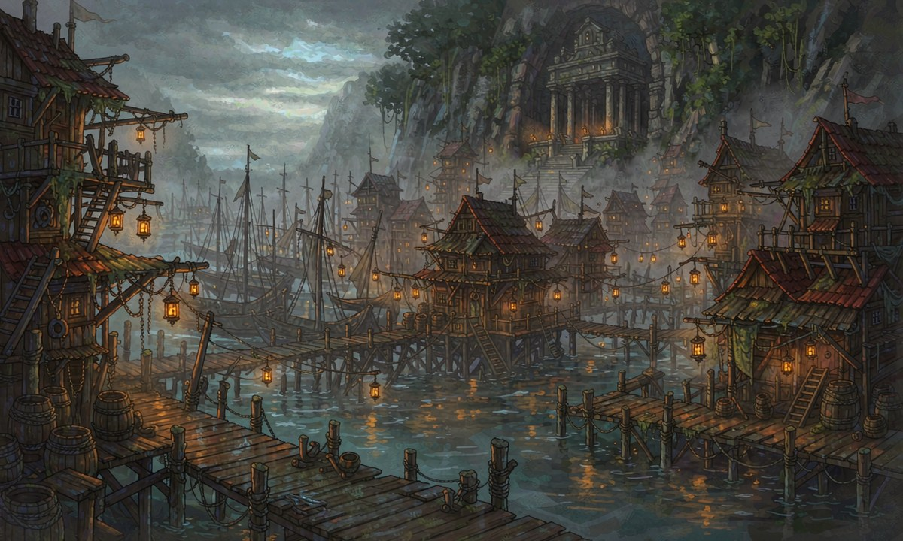
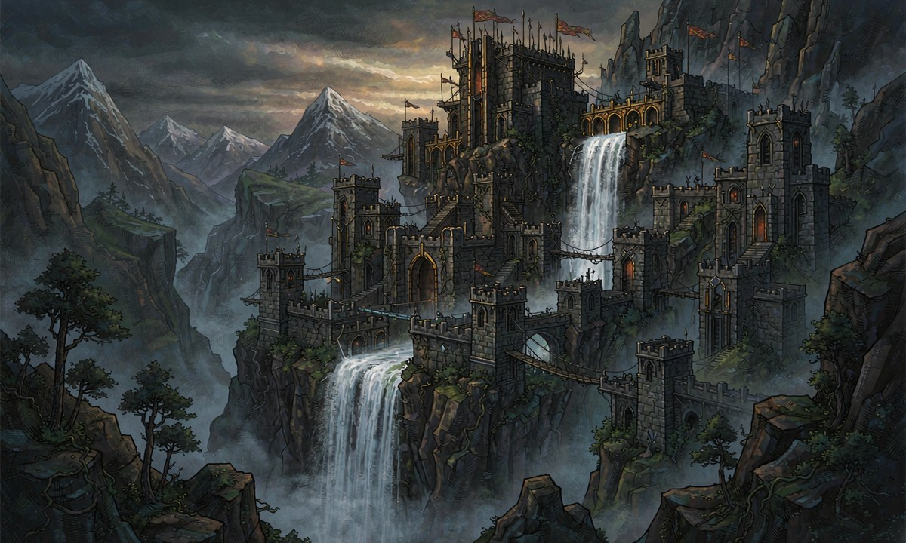

头像待定
PC 1 · 待填写占位
姓名 · 年龄 · 性别 · 初始契约 —— 待填写
力量—修正 —
敏捷—修正 —
体魄—修正 —
体型—修正 —
意志—修正 —
灵感—修正 —
灵力—修正 —
检定 ＝ d20 ＋ 属性修正 ＋ 熟练加值 +2
HP —MP —AC —意志值 —负重 —受训 —熟练加值 +2
受训技能待定
属性总池 70 点（每项 5 ~ 18）；受训项数 ＝ 4 + 灵感调整值；头像与信息填入后即可替换本卡。

两名可直接使用的示例角色：一名稳健成长型的近战执契者，一名纯输出型的契约爆发者。属性、技能、衍生值均已按当前规则算好，可作为车卡参照。
四国各有其政体与掌权者，以下按国家分列其重要人物。





